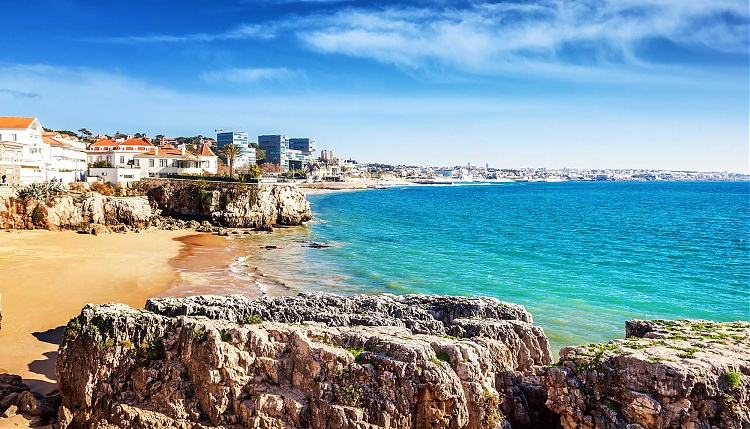
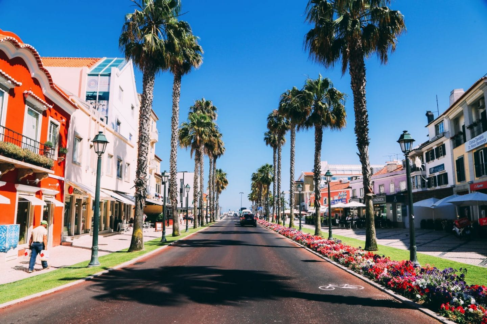
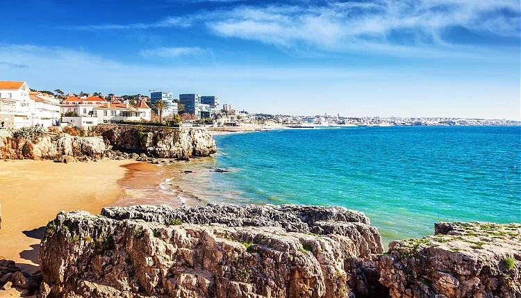
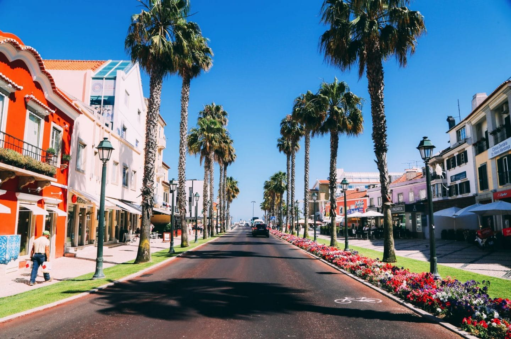

Sitios para visitar

E sabes porquê?
Cascais ao longo dos ultimos 5 anos tem investido em:- Transportes gratuitos,
- Ciclovias,
- Voluntariados,
- Espaços verdes,
- Construção de escolas e faculdades com melhores condições.
Viver em Cascais
Agora é muito mais acessível e empolgante- Praias, piscinas e espaços verdes
- Grande variedade de infraestruturas no que toca ao ensino
"Vem por 1 razão, fica por muitas"
 



Video
Um pequeno video sobre Cascais
Tabela relativa aos voluntariados disponiveis em 2020 na câmara de cascais
| Voluntariados Cascais Jovem | |||
|---|---|---|---|
| Natura Observa | Maré Viva | Cultura Social | Cultura no bairro |